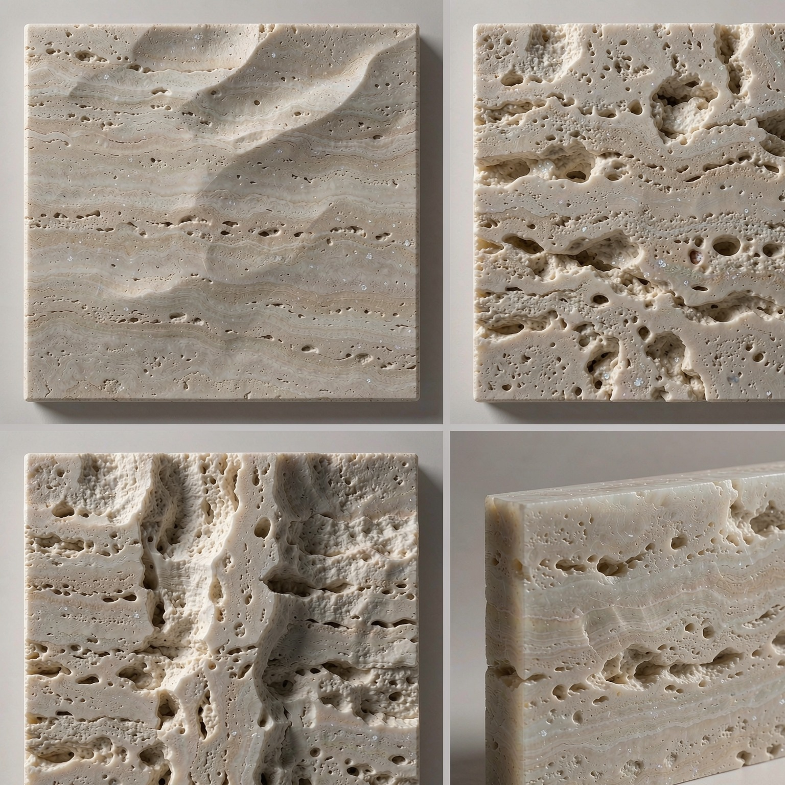
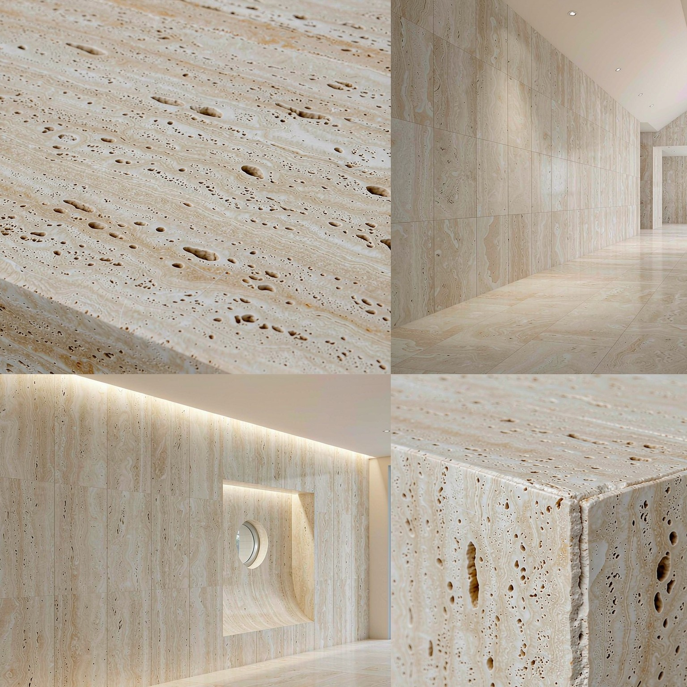

產自意大利蒂沃利（Tivoli）的經典米黃洞石，與古羅馬鬥獸場同源。質地溫潤、孔洞自然，拋光或啞光後呈現象牙般的暖白，斜光下可見細密的層理與晶體閃點。吸水率偏高、質地較軟，適合室內地面、背景牆與溫泉浴場，是歐洲古典與現代極簡空間的共同寵兒。

技術參數 Technical Data
密度
Density
2.40 – 2.50 g/cm³
吸水率
Water Absorption
2.0 – 3.5 %
抗壓強度
Compressive Strength
60 – 100 MPa
抗彎強度
Flexural Strength
7 – 11 MPa
莫氏硬度
Mohs Hardness
3.0 – 4.0
放射性等級
Radioactivity Class
A 類 Class A
耐磨性
Abrasion Resistance
≤ 4.0 mm
體積密度
Bulk Density
2,400 – 2,500 kg/m³
* 以上數據為典型值範圍，具體批次可能略有差異。如需特定批次檢測報告，請聯繫我們。
應用場景 Applications
古典背景牆
層理自然，韻味獨到
溫泉與浴場
啞光防滑，親膚溫潤
室內地面鋪貼
暖白基調，空間明亮
樓梯與窗台
孔洞填補後易清潔
酒店大堂端景
米黃高級，氣質沉穩
壁爐與裝飾面
質感溫潤，氛圍柔和
可選表面處理工藝
不同表面處理賦予石材不同的質感與功能性
📐 常規規格
3200×1600mm / 3050×1440mm
600×600mm / 800×800mm
接受特殊規格定製
600×600mm / 800×800mm
接受特殊規格定製
📦 常規厚度
18mm / 20mm / 30mm
牆面常用 18mm，檯面常用 20mm
接受特殊厚度定製
牆面常用 18mm，檯面常用 20mm
接受特殊厚度定製